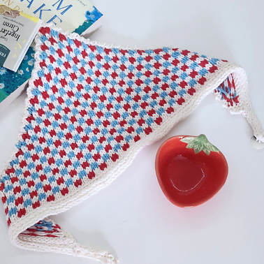
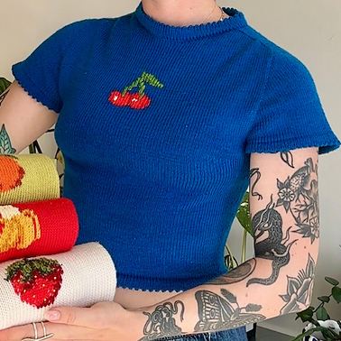
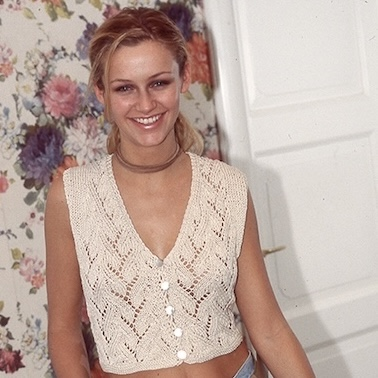

Learning how to knit in the age of fast-paced and evolving technology!
Welcome to my knitting blog! I am super excited to share my knitting journey with you all as I continue to try out new patterns, find new knitting trends, and reflect on how knitting has helped me with my mental health! Stay tuned as I will be posting blogs about some of my finished pieces and WIPs, patterns that I hope to make in the future, and more!
Recent posts from the Blog
Check out my recent blog posts below!

First Colorwork Project: Picnic Bandana
I finally worked on my first colorwork project! Learn more about my progress below!

5 Free Spring/Summer Knitting Patterns
It's finally warming up! Here are five free knitting patterns that will great for the spring/summer time!

DROPS Design "Summer Vines Vest": Current WIP
Welcome to the blog! Here, I discuss my current WIP and what I have learned so far!